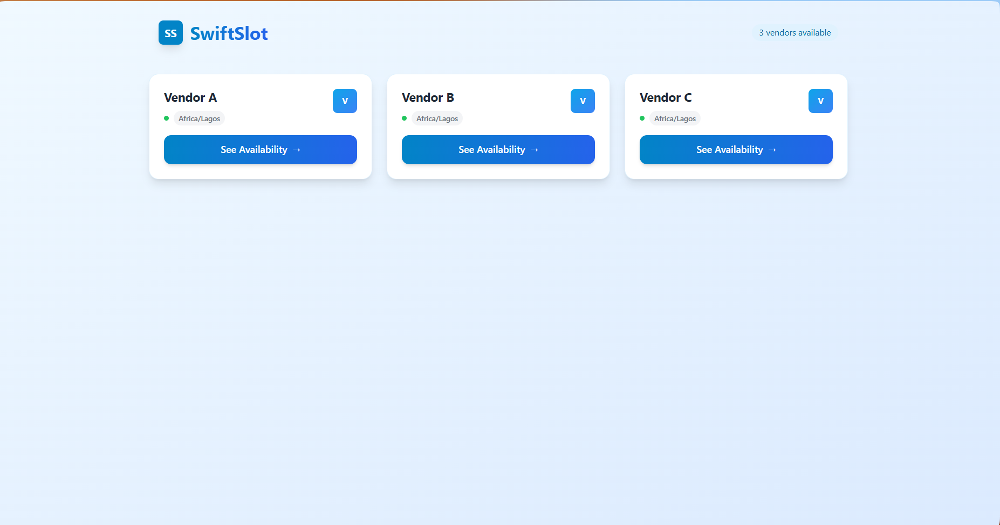
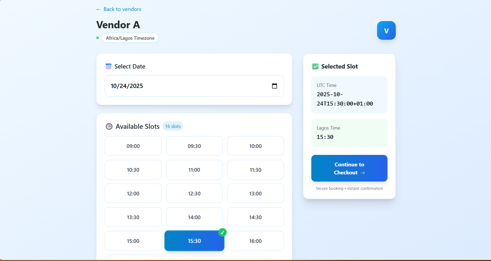
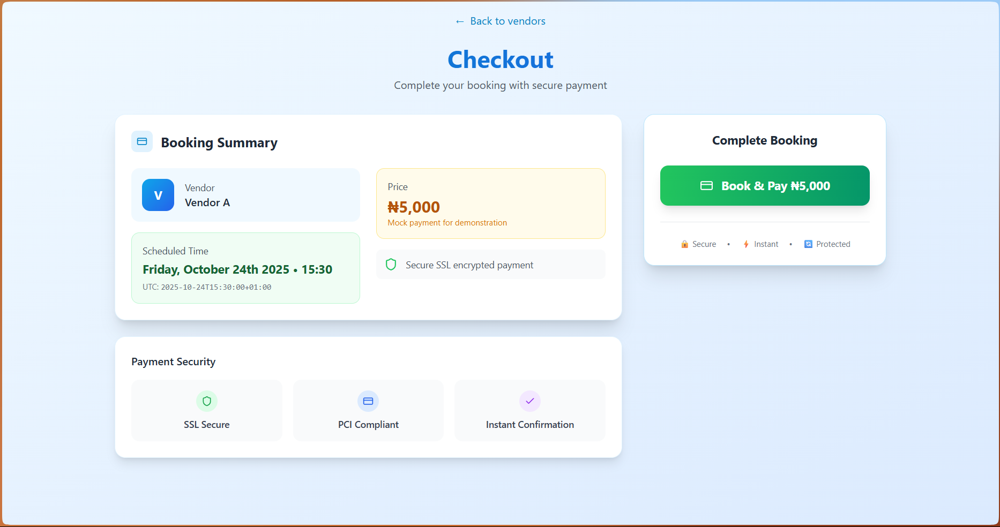
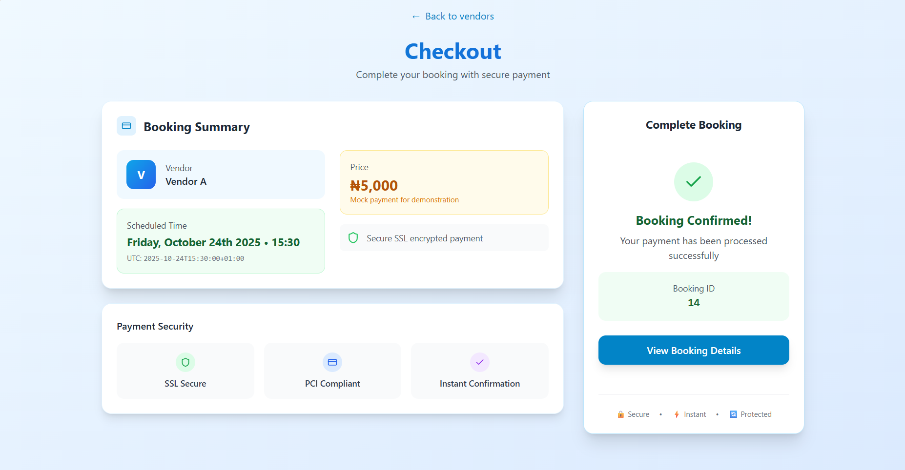
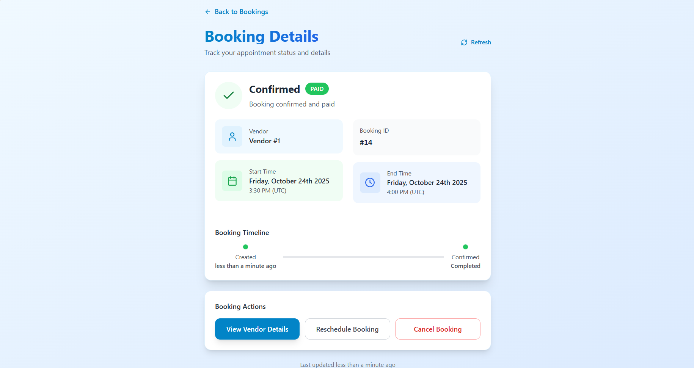
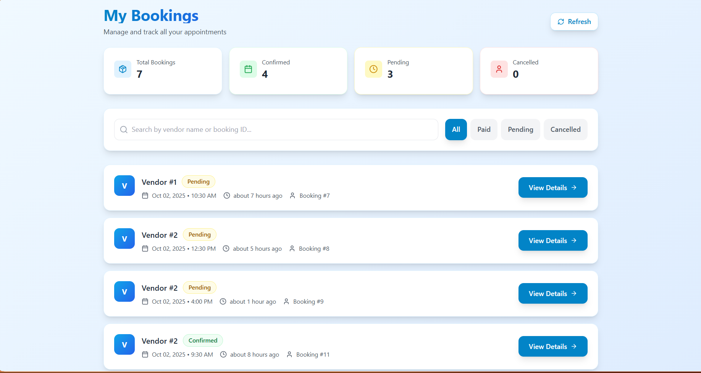

TIME IS DATA
Persist UTC; present the right local time at the edge.


Booking looks simple until two people can reach the same slot, local time differs from stored time, or a repeated request creates a duplicate reservation.
The build separates what the user sees from the integrity rules underneath: available slots, UTC persistence, Africa/Lagos presentation, unique slot constraints, idempotency and transactional protection.
The visual language mirrors the engineering problem: requests move toward one canonical time, one protected slot and one committed booking state.
Scroll the constraint: requests normalize to one canonical time, compete for one protected slot and resolve into one committed state.




This section translates the supplied interface into the sequence of responsibilities visible in the build record.
Persist UTC; present the right local time at the edge.
Unique constraints and transactional protection keep a bookable slot from becoming two bookings.
Idempotent handling makes repeated requests predictable instead of destructive.
A build record that connects the visible interface to the job the product is trying to do.
These are the actual project images supplied for the archive. They are shown without fabricated performance claims or fake client outcomes.